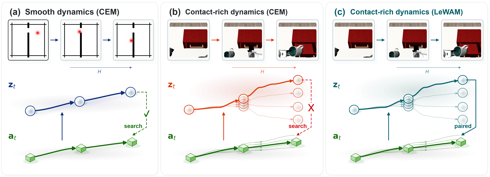
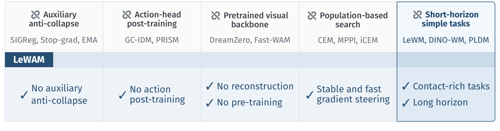
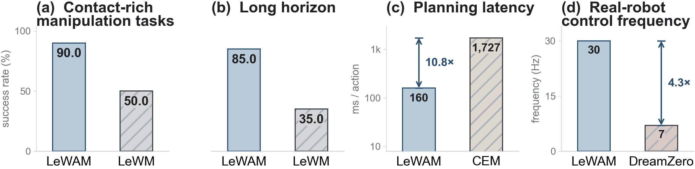
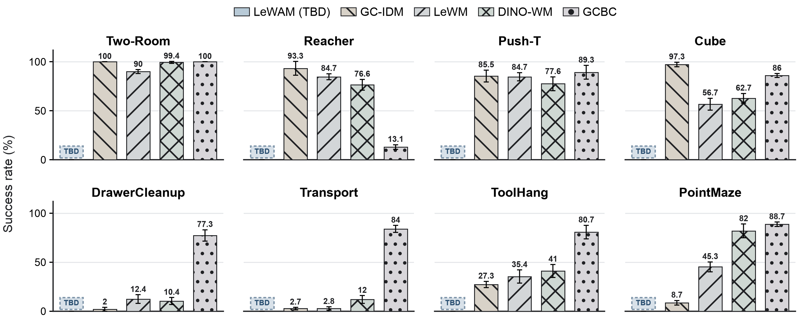
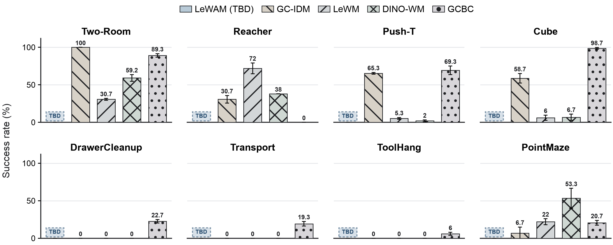
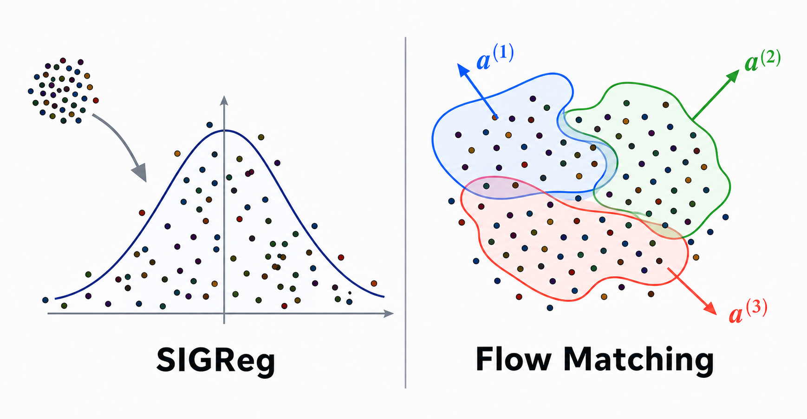

WorldForge8 evaluates the same JEPA-control interface across navigation, planar control, articulated manipulation, bimanual coordination, dexterity, precision, contact-rich dynamics, and long task horizons. The first row follows the four LeWM task definitions; the second row adds complementary long-horizon navigation and manipulation settings.
Abstract
Joint-embedding predictive architectures (JEPAs) offer compact, reconstruction-free world models for control. Existing JEPA controllers, however, often combine specialized components: auxiliary anti-collapse objectives, separately trained action policies or population-based solvers, and pretrained visual backbones. These choices make the resulting pipelines complex to train and expensive to deploy, while their demonstrated scope remains largely limited to low-complexity, short-horizon tasks.
We introduce LeWAM, a succinct JEPA with no auxiliary components or constraints: a single joint prediction objective learns control-centric representations end-to-end. Forward dynamics describes what happens, while action prediction specifies how to realize it. For test-time planning, Steer-MPC optimizes a bounded goal-latent steering vector while keeping the predictor frozen. Across eight simulated environments and five physical-robot tasks, LeWAM targets contact-rich manipulation and long-horizon control beyond prior JEPA benchmarks.
TL;DR: LeWAM learns future latent states and executable action continuations together, then acts directly or plans by steering that same frozen continuation model.
Approach
One joint predictor. From reward-free trajectories, an encoder maps observations into latent states and one conditional predictor assigns a joint distribution to the next latent state and next action. Applying the same predictor recursively yields paired imagined latent and action continuations.
(ẑt+1, ât+1) ∼ pΘ(zt+1, at+1 | z≤t, a≤t, ct)
One objective. The latent and action targets shape the representation through a single joint likelihood. The action flow learns coherent, multimodal behavior; the goal-blind latent dynamics learns the physical consequence of clean actions. Every proposed continuation therefore remains paired with its predicted world change.


Planning with LeWAM
Direct control reads the action marginal of the joint model in one forward pass. When direct execution is insufficient, Steer-MPC searches through the same frozen continuation model—without updating model parameters and without assigning every time step an independent raw-action coordinate.
A bounded steering vector edits the encoded goal. The action conditional regenerates a complete, temporally coupled action continuation after every update; the unmodified goal remains the evaluation target. Only the first action is executed before replanning.
v* = arg min‖v‖₂≤ρ d(FΘ(H)(A(v)), zg)

WorldForge8
Goal-reaching and task-completion results
Short-horizon evaluation uses the same-trajectory 25-step visual-goal protocol and a 50-action execution budget. Task-completion evaluation instead pairs the first observation of a complete trajectory with its terminal observation, requiring the controller to finish the native task.


The webpage intentionally preserves the paper’s current TBD state. It does not infer values from placeholder boxes or promote draft measurements into claims.
Evaluating Physical Understanding
Control-centric representations
LeWAM uses neither explicit state supervision nor an auxiliary representation regularizer. The paper therefore probes whether joint prediction organizes latent space around physical distinctions needed for control: observed state, contact mode, future displacement, temporal ordering, and imagined planning.
Matched latent-only, shuffled-action, frozen-encoder, SIGReg, and joint-MSE controls isolate whether structure comes from sensorimotor pairing, end-to-end learning, auxiliary anti-collapse, or modeling the full conditional action distribution.

Representation shaping. Explicit latent-distribution regularization is contrasted with control-centric separation induced by joint action and latent targets.
Why joint flow matching?
A fixed-variance Gaussian and MSE can preserve the same input–output interface, but estimate only a conditional mean. Conditional flow matching can retain multiple coherent action continuations, with each action mode coupled to its own predicted latent consequence.
Real-robot Control
The physical-robot study asks whether reconstruction-free joint prediction can convert a video foundation model’s visual and temporal prior into controllable structure. A frozen V-JEPA 2.1 backbone is paired with a trainable joint flow-matching predictor on a seven-DoF robot.
Rigid-object manipulation
Charging-block pick-and-place tests visually grounded grasping, transport, and placement.
Deformable interaction
Towel folding tests extended, contact-rich behavior over a longer action horizon.
The Overleaf manuscript currently marks the finalized factorial robot results and matched latency measurements as pending. This page keeps that scope statement without fabricating results.